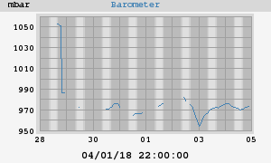

Barometer
24h barometer
Today's min: 969.9 mbar at 14:03:28
Today's max: 976.0 mbar at 01:05:00
7-day barometer

This week's min: 954.3 mbar at 00:17:03 (Wednesday)
This week's max: 982.1 mbar at 10:59:59 (Tuesday)
weewx v 3.8.0